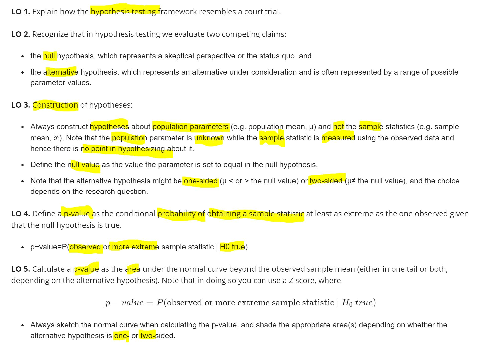
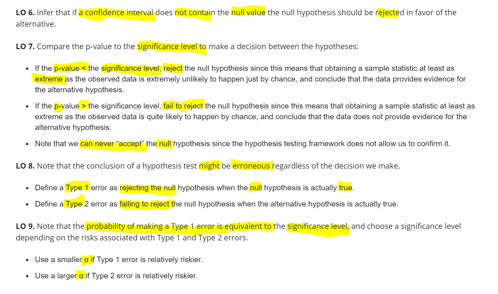

Chapter 4 Hypothesis Testing
4.1 Chapter Summary

Figure 4.1: Chapter Summary

Figure 4.2: Chapter Summary
只能reject null,不能accept null： 、 - 这里的结论是reject null hypothesis 即没有足够的证据证明不一样 - 结论只能说可以reject 或者not reject null hypothesis，而永远不能说accept null hypothesis - 因为你真正关心的其实是alternative hypothesis